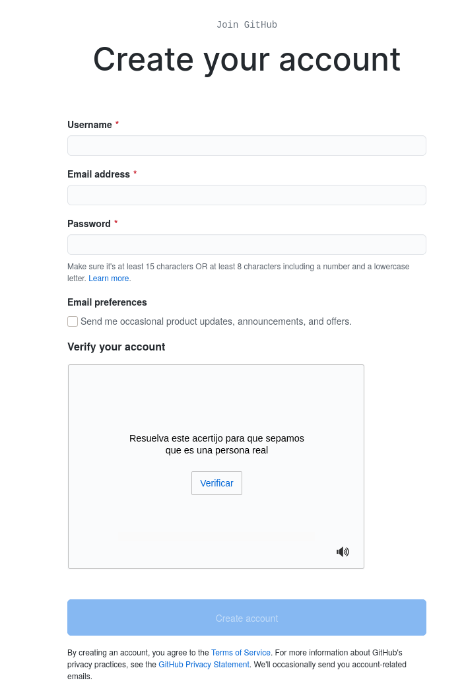
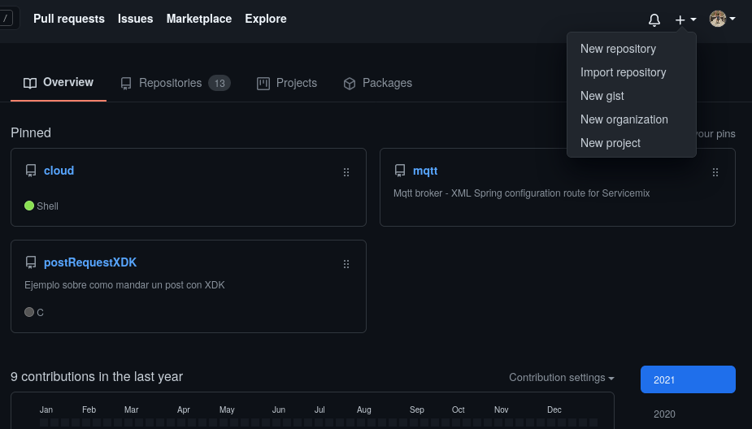
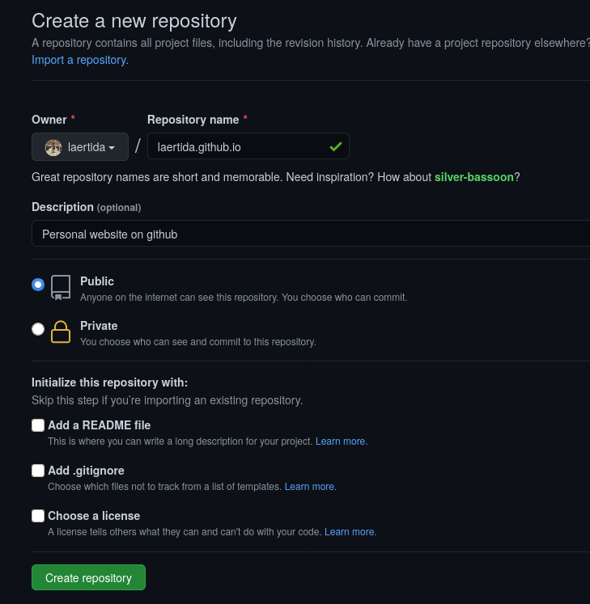

You can create a simple personal site on github by only creating a repository.
First things first, create your github account, if you already have one, you can skip this step. Navigate to https://github.com and click on "Sing up" at the upper right side of page. You should see something like this:

Fill all the required information and click on "Create account"
Now you have an account, you can create a repository. Again in the upper right side of the page, you will find a plus sing,that allows you to add many things, one of them is a new repository. Click on "New repository"

Now you will se a page like this:

Make sure you fill up the form with the right information:
In your local computer, you should create a simple html file named index.html. Its preferible you create this file in a new folder, where you will have all resources of your webpage.
here is an exaple of a index.html file
<!DOCTYPE html>
<html>
<head>
<title>laertida</title>
</head>
<body>
<h1>My personal protafolio:</h1>
<p>Here are some pages I've created:</p>
<ul>
<li><a href="./how_to_create_a_github_page.html">How to create a personal github site.</a></li>
</ul>
</body>
<html>
Now in your terminal, go to the directory where you created the file and init a git repository by typing
git init
Now you have to add to your stagging area the created repository.
git add index.html
Next you have o commit your changes, adding a message.
git commit -m "index.html file added"
Its time to reference to your remote repository created in github. (Of course you have to replace the link for the one in your repository)
git remote add origin https://github.com/laertida/laertida.github.io.git
Now it's time to publish the changes by typing:
git push origin master
Your github user and password will be asked, type them and you will see a confirmation message.
If you followed right the previous steps you will see your index.html in published in your repository. I you do, then now it's time to confirm your site was created correctly.
Go to your_user_name.github.io in your internet browser and you will see your webpage.